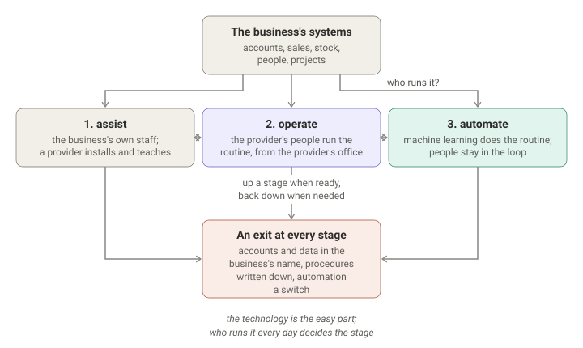
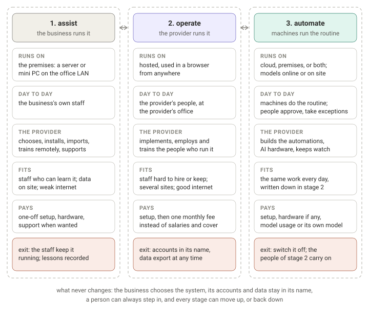
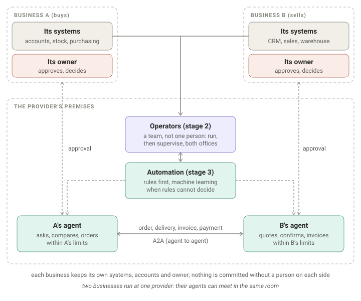

three stages

Most technology projects in small and medium businesses do not fail on technology. The software works, the server boots, the integration passes its test. They fail on people: the one admin who understood the accounts leaves, the owner never trusted the screen, the warehouse kept a paper book next to the new stock system "just in case", the subscription was priced for a market where an office worker earns ten times more. This paper describes three stages of bringing technology into the whole of a business (accounts, sales and CRM, marketing, purchasing, warehouse, payroll and HR, projects, documents, customer service), defined less by what is installed than by who does the work: assist, the business's own people; operate, the provider's people; automate, machine learning, with people kept in the loop.
Read that way, the three stages are one long automation project under the human-in-the-loop principle. Stage 1 gets the work into a system. Stage 2 gets it done by people who do the same work for many businesses, side by side, and write every procedure down. Stage 3 hands the written-down routine to machines, and keeps those same people for approvals and exceptions. At the far end, when the buyer and the seller are both run this way, their agents can settle an order between them, and a person on each side only signs.
The middle stage is the point of this paper. The common shortcut today skips it: buy a cloud "command center", let most of the office go, and leave one person to run the whole back office through a dozen dashboards. The automation is real, but the remaining work does not disappear; it concentrates on that one person. Stage 2 moves that person out of isolation and into a team, and it is what lets the same people stay employed, and better employed, when stage 3 and agent-to-agent trade arrive.
It is written for emerging markets, where most of these businesses live: shops and distributors, workshops and small factories, restaurants and caterers, schools and training centres, travel and property agents, clinics and studios, logistics and repair services, family firms of five to fifty people. The stack is mostly open source, with paid cloud services where they earn their price. The audience is technical; feed the page to an AI of your choice and it should be able to draft a stage plan for a real business. The last section is written for exactly that.
0. words used in this paper
- the business: the small or medium business being served. Its owner, its management, its staff.
- the provider: whoever brings the technology in and, from stage 2, does the work: an IT and operations company, small or large.
- the systems: the software the business runs on, one per area or one ERP for most of them.
- operator: a person employed by the provider who does a business's back-office work in its systems, from the provider's office.
- machine learning/AI: statistical models, from a receipt reader to a large language model. Useful, not a mind; it proposes, people dispose.
- human in the loop: a person approves, corrects or takes over wherever a machine is unsure, and can stop it at any time.
1. the ground the stages stand on
- People churn faster than software. Office staff move on for a slightly better wage, and the knowledge of how the business really runs leaves with them.
- The work lives in heads, chats and spreadsheets. Before anything can be automated it has to be written down; most businesses have never done that.
- Prices are set elsewhere. Software and AI are priced per seat or per token in dollars; wages are not.
- Infrastructure is uneven. Power cuts, one internet line, carrier-grade NAT, a phone hotspot as backup.
- Trust is personal. An owner trusts a person they can talk to, not a dashboard.
- Rules are arriving. Tax e-invoicing, personal-data and labour laws are going digital; the business must keep up whether it wants to or not.
So the question is never only "which software". It is "who will do this work every day, how is it written down, and what happens when that person leaves". The stages answer exactly that.
2. the lone operator: what the shortcut leaves behind
A typical path for a small business today: five people in the office, a cloud suite promising to automate the back office, four positions cut, one kept "to manage the system". On paper the cost fell by most of four salaries. In practice the work that the software does not finish (the exceptions, the corrections, the approvals, the customer who calls anyway) now lands on one desk. Assistive AI inside each dashboard shortens individual tasks; it does not change who has to watch every queue.
| property | one operator per business | a team of operators at a provider |
|---|---|---|
| cover for leave, illness, resignation | none; the back office stops | a colleague who knows the runbook takes over |
| alerts and queues | every one, from every system, to one person | shared queues, split by area and shift |
| interfaces | a dozen dashboards, switched all day | each operator specialises in a few systems, learned well |
| knowledge | in one head; leaves with that person | written down, reviewed, used across many businesses |
| mistakes | found late, by the owner or the tax office | caught by a second pair of eyes |
| working life | isolated, on call, no one to ask | colleagues, a career path, regular hours |
In systems terms, the lone operator is a single point of failure with no redundancy, running at full utilisation with no headroom, and exposed to alert fatigue. Nobody would design a server that way. The same remedy applies to people: pool them. A small business rarely needs a full-time bookkeeper, payroll clerk and stock controller; it needs a fraction of each. Ten businesses that each need a third of a bookkeeper are three or four bookkeepers who cover each other, not ten people each doing three jobs alone.
This is why stage 2 is needed now, before full automation, not after it. It turns the work that automation leaves behind into shared, written-down, reviewable work, done by people who have colleagues. Stage 3 then automates that work without removing the people: their role moves from doing the routine to supervising it.
3. the systems: the whole business, not one desk
One example stack per area. Each has commercial equivalents; the point is that every area has a system where the work, and later its automation, can live.
| area | open-source examples | what stage 3 can take over |
|---|---|---|
| accounting, tax | Odoo Community, ERPNext, Akaunting | read supplier invoices into the books, suggest bank matches, prepare tax reports |
| sales, CRM | ERPNext, Odoo CRM, SuiteCRM, Twenty | log enquiries, score and route leads, draft follow-ups and quotes |
| marketing | Mautic, listmonk | segment customers, draft campaigns, report what worked |
| purchasing, warehouse | Odoo Inventory, ERPNext Stock | suggest reorders, flag stock gaps, match deliveries to orders |
| payroll, HR | Frappe HR, Odoo HR, OrangeHRM | check timesheets, flag payroll anomalies, answer staff questions |
| projects | OpenProject, Taiga, Plane | status summaries, overdue alerts, time and cost roll-ups |
| documents | Nextcloud, Paperless-ngx | file, tag and find documents by their content |
| customer service | a self-hosted chat hub | answer the routine, hand the rest to a person (reduce token usage) |
4. three stages, one ladder

The stages are not a sales funnel. A business does not have to climb, and it can sit at different stages for different areas: invoices read by a machine, payroll run by the provider's people, sales kept by its own staff. What makes it a ladder is that each stage reuses the one below it: the systems chosen in stage 1 are the ones the operators work in at stage 2, and the procedures the operators write down at stage 2 are what stage 3 automates. Nothing is thrown away when a business moves.
5. stage 1, assist: the business does the work
The systems run on the premises or in the business's own cloud accounts, and the business's own staff do the work in them. The provider chooses the systems with the business, installs them, imports the data and trains the staff, mostly remotely.
- Hardware: a small server or mini PC, often second hand (see 2nd hand, 2nd chance), on a UPS, behind an office router the business controls (see front desk).
- Software: a long-support Linux, the community edition of the systems above, PostgreSQL or MariaDB underneath.
- Backups: nightly, encrypted, off the machine and off the premises. A backup is real only after a test restore.
- Remote help: RustDesk with a self-hosted relay for guided sessions; a VPN for the provider's maintenance.
# nightly backup of a stage 1 server (restic, two targets, a monthly test restore) export RESTIC_PASSWORD_FILE=/etc/backup/restic.pass pg_dump -Fc erp > /var/backups/erp.dump restic -r /mnt/backup-disk/repo backup /var/backups /srv/files --tag nightly restic -r s3:https://bucket.example/office backup /var/backups /srv/files --tag nightly restic -r /mnt/backup-disk/repo forget --keep-daily 14 --keep-weekly 8 --keep-monthly 12 --prune restic -r /mnt/backup-disk/repo restore latest --target /tmp/restore-test
- Teach on their screen. The trainer moves the mouse while the employee watches, then they swap. The employee accepts every connection and can end it.
- Record every task. Short screen recordings ("a supplier invoice", "a stock count", "month-end close", "a new hire") outlive the employee who first learned them.
- One named owner inside. Someone on the payroll who knows where the server is, who to call, and how to read the backup report.
- A first month with a plan: choose and check, install with users, roles and backups, import and teach, then go live with the provider on standby.
Fits a business that already has office staff, must keep data on site, or cannot rely on its internet. Its weak point is people leaving; the recordings and the named owner are the answer, and stage 2 is the cure.
6. stage 2, operate: the provider's people do the work
Because the systems are used through a browser, the work in them can be done from anywhere. At stage 2 it is done from the provider's office, by operators the provider employs: bookkeeping and payments, payroll runs, purchase orders and stock reconciliation, CRM upkeep and follow-ups, campaign sends, project status reports. It is remote work, but the remote workers belong to the provider, not to the business: the provider hires them, trains them, covers their leave, secures their machines and stands behind their work. The business keeps its core people on site, doing what only they can do: the craft, the sale, the relationship, the decisions.
The person a business would otherwise keep alone at a dashboard is exactly the person stage 2 needs. A provider can hire that operator, sometimes from the same business, and seat them with colleagues: the same skills, now shared across many businesses, with cover, review and normal hours.
- People the business can talk to. Named operators, a phone number, an office the owner can visit. Not a ticket queue, not an anonymous platform.
- The systems stay the business's. Every account, licence, domain and bank mandate in the business's name, the provider's operators as users with roles. Two-step login, per-business accounts, logged access.
- Tasks and boundaries in writing: what the operators may do alone (enter, reconcile, draft), and what always goes back to the owner (pay, hire, sign, price).
- Every procedure written down. An operator doing the same month-end for twenty businesses writes the runbook once and improves it every month. That runbook is the most valuable thing stage 2 produces: it is the specification for stage 3.
- Work is pooled, not piled. Each business has a named lead operator and at least one second who knows its runbook; queues are shared by area, not by business. Load per operator is measured and kept below full, so a peak or a leave day is absorbed.
- Leaving is designed in. With the accounts in its name and the runbooks shared, the business can take the work back in-house or to another provider.
An operator's day, across several businesses: 07:30 bank feeds imported and matched; 09:00 supplier invoices entered and queued for approval; 11:00 stock moves reconciled with deliveries; 13:00 CRM enquiries logged and assigned; 15:00 overdue invoices chased, payroll inputs checked; 17:00 a short report to each owner, exceptions listed first.
Fits a business that struggles to hire and keep office staff, has several sites, or wants one predictable monthly cost instead of salaries, recruiting and cover. It needs reliable internet. It is also where human-in-the-loop starts: the operators are the loop.
7. stage 3, automate: machines do the routine, people stay in the loop
The routine written down at stage 2 is handed to automation, in the order that saves the most and risks the least. The rule is the one behind any good automation, and behind the chat hub in reduce token usage: plain rules first, machine learning only when rules cannot decide, every result checked, a person a click away.
- Rules first: workflows and triggers in the systems themselves (recurring entries, approval chains, reorder points, reminders) and scripts or tools such as n8n between them. Cheap, exact, auditable.
- Then models: a receipt and invoice reader (OCR plus a language model filling a fixed form), a classifier for bank lines and enquiries, a language model to draft replies, summaries and reports.
- Then the loop: every model output carries a confidence; above the line it is applied and sampled for audit, below it goes to an approval queue that the stage 2 operators already work in.
Where the models run:
| level | where | good at | watch out for |
|---|---|---|---|
| a. model API | a provider's cloud model, pay per use | nothing to buy, the strongest models | personal and financial data leaves: mask it first; cost grows with use |
| b. local code + API | a small machine runs the rules; the API only for what rules cannot decide | most work never reaches the model; low cost; local control | someone keeps the machine healthy |
| c. own model server | open-weight models (Llama, Qwen, Gemma) on llama.cpp, Ollama or vLLM | data never leaves; no per-use fees | upfront hardware; smaller models need tighter forms and more rules |
Human in the loop, made concrete:
- Machines propose, people dispose. Nothing that moves money, changes a price, hires, fires or promises is done without a person's approval.
- Exceptions go to named people, the same operators as stage 2, with the reason attached, not a bare alert.
- Sampling audits: a share of what was applied automatically is reviewed every week; the share rises when a model or a rule changes.
- Honest automation: customers and suppliers are not told a machine is a person.
- The role shifts, the people stay. As a task is automated, the operator who wrote its runbook becomes its supervisor: tuning the rules, reviewing the low-confidence queue, auditing samples, stepping in when a supplier or customer needs a person. The same team then covers more businesses at a calmer pace, instead of being cut.
- The exit is a switch. Turn an automation off and the operators of stage 2 carry on with the same runbook. A good stage 3 degrades to stage 2, never to chaos.
Fits work that repeats every day and is already written down. It works best on top of a stage 2 that runs well; automating a mess automates the mess.
8. at the provider: where A2A begins

Today, a purchase between two small businesses is a chain of people retyping: a quote in a chat, an order in a spreadsheet, an invoice in a PDF, a payment slip in a photo. Once both businesses run their back office through stage 2 and 3, each has an agent that knows its stock, prices, limits and approval rules. The protocols for agents to talk to each other are being written now (agent-to-agent, A2A, among others). When both agents run at the same provider, the first version needs no new protocol at all: the order, the delivery note, the invoice and the payment can be settled agent to agent inside one secured room, each business's data still in its own systems, and each owner approving what their agent commits.
In that setting the operators are not displaced; they are the ones who make agent-to-agent trade trustworthy. They set each agent's limits, watch the exchanges, check the agents' work every day, and step in on the disputes, the unusual orders and the first trade with a new partner. The work becomes oversight rather than retyping. The chat version of the same idea is section 4 of reduce token usage.
9. moving between stages
- Up, when the signal is there: stage 1 to 2 when hiring and keeping office staff gets hard or a second site opens; stage 2 to 3 when a runbook has been stable for months.
- Down, without drama: operators hand back to new in-house staff with the runbooks; an automation is switched off for a new law or a bad month. The systems and the data stay.
- Mixed, by area: invoices at stage 3, payroll at stage 2, sales at stage 1, and that is fine for years.
- What makes moving cheap: systems chosen once, accounts in the business's name, standard export formats, runbooks written as the work is done, open source underneath wherever it is good enough.
10. risks and limits
- Stages do not fix a bad system choice. The wrong software run well is still the wrong software.
- Concentration. Many businesses run at one provider is efficient and a single point of failure. Accounts in each business's name, exports and runbooks are the insurance.
- Remote work needs trust both ways. Roles, logs and written boundaries protect the business and the provider alike.
- Model costs and models move. Free tiers shrink, prices change, models are retired. Rules first, and levels b and c, protect against that.
- Automation can still be used to cut people. The stages describe a path; they do not guarantee how a provider treats its operators. A provider worth choosing says how it staffs, covers and retrains as automation grows.
- The law applies at every stage: tax records, personal data and employment data each have rules on where they live and who may touch them.
11. principles that hold at every stage
Across the three stages, the direction of help turns around. At stage 1 the machine assists people. At stage 2 people assist each other, in a team. At stage 3 people assist the machine: they set its limits, correct it, and take what it cannot decide. These principles keep that turn humane, in every area of the business, from a supplier invoice to a payroll run to an order between two agents.
- A person always wins. When a person acts on an item (edits an invoice, changes an order, answers a customer), the machine stops on that item and never overrides it.
- When unsure, hold and hand over. A held payment, a draft left for approval, a short holding reply: each is better than a confident wrong action. Every hold has a named person and a reason.
- One queue, not twelve dashboards. Exceptions from every system arrive in one place, sorted by urgency, with the reason attached. The routine stays out of sight.
- Every correction teaches, with a name on it. A fixed bank match, an edited reply, a changed reorder point becomes a rule or a saved example, credited to the person who made it. Operator, then trainer, then supervisor is a career, not a countdown.
- Measure people's load, not headcount cut. Hours saved, items per person, out-of-hours interruptions, queue age. "Positions removed" is not a goal.
- Machines work nights; people do not. Automation may run around the clock; urgent exceptions go to a rota, never to one person on permanent call.
- Cheapest tool first. Rules, then saved knowledge, then a small model, then a large one, then outside lookups; the cost of each visible per business.
- Honest about who does the work. A machine is never presented as a person and never denies being automated when asked; a person is always reachable. Disclosure follows the law where the business operates. Some closed platforms penalise accounts for certain words rather than for behaviour; there, neutral wording such as "the system" or "automated reply" is honest enough, and agent-to-agent work waits for open platforms.
- The business can always leave. Accounts, data, rules and runbooks stay in its name; switching automation off falls back to people, not to nothing.
12. a stage plan (for people, and for the AI you hand this page to)
To draft a plan for a real business, collect these answers first, then map each area to a stage:
business: trade, size, sites, opening hours, languages, who decides what
areas: accounts/tax, sales/CRM, marketing, purchasing/warehouse, payroll/HR,
projects, documents, customer service: for each, how it is done today
people: office staff per area (count, turnover per year), the named owner inside
volume: invoices, orders, stock moves, payslips, messages per month; repeat tasks
data: personal, financial and tax data held; legal limits on where it may live
infrastructure: internet (outages per month), power (UPS?), current hardware
money: one-off budget, monthly budget, the currency of each
for each area, decide:
stage 1, 2 or 3, and why
the system (open source or paid plan), where it runs, who does the work day to day
accounts in whose name, roles, two-step login, backups, export, the exit
stage 2: tasks and boundaries in writing, a lead and a second operator, the runbook
to start, target load per operator, who covers leave
stage 3: rules first; which model level (a, b, c); what is masked; the confidence
line; who approves; the weekly audit sample; the off switch; the new role
of each operator whose task is automated
output: a one-page plan per area, a first-month plan, a monthly cost
credits
Built on the work of the open-source projects named above, and on many small businesses that tried technology before it was ready for them.